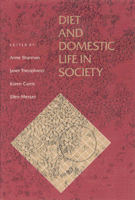

A collection of case studies reports on dietary practices in a variety of cultures
A collection of case studies reports on dietary practices in a variety of cultures


 A collection of case studies reports on dietary practices in a variety of cultures
A collection of case studies reports on dietary practices in a variety of cultures

|  |
Diet and Domestic Life in Societyedited by Anne Sharman, Janet Theophano, Karen Curtis and Ellen Messercloth EAN: 978-0-87722-751-9 (ISBN: 0-87722-751-9) |
This book is a collection of case studies of dietary practices in a variety of cultures and societies: Malaysia, Mexico, Guatemala, Bangladesh. Southern Belize, India, and two urban settings in the United States. The authors—all anthropologists—report on the foods that are eaten, the reasons for the choices, and who makes the choices. Drawing on a wide range of approaches—including cognitive, symbolic, semiotic, ecological, and Marxist analyses—the authors of these ethnographic studies suggest the rich possibilities of this diversified approach for studying various aspects of diet and social relations.
1. Introduction – the Editors
2. Where the Wild Things Are – Carol Laderman
3. Getting Through Three Meals a Day: Diet, Domesticity, and Cash Income in a Mexican Community – Ellen Messer
4. The Impact of Health on Women�s Food-Procurement Strategies on a Guatemalan Plantation – Mary Scrimshaw and Sheila Cosminsky
5. Socioeconomic and Cultural Factors Affecting Inter-Household and Intrahousehold Food Distribution in Rural and Urban Bangladesh – Najma Rizvi
6. Kin Ties, Food, and Remittances in a Garifuna Village in Southern Belize – Joseph 0. Palacio
7. Sisters, Mothers, and Daughters Food Exchange and Reciprocity in an Italian American Community – Janet Theophano and Karen Curtis
8. From Generation to Generation, Resources, Experience, and Orientation in the Dietary Patterns of Selected Urban American Households – Anne Sharman
9. Dietary Improvisation in an Agricultural Economy – Arjun Appadurai
10. Decision Analysis in Nutrition Studies – Sutti Ortiz
11. Diet and Domestic Life in Society: Directions for Research and Implications for Policy – the Editors
Anne Sharman is an anthropologist who is studying for her R.D. at Drexel University.
Janet Theophano is Assistant Dean and Assistant Director of the College of General Studies at the University of Pennsylvania and also Adjunct Assistant Professor of Folklore and Director of the Social Gerontology Program.
Karen Curtis is Associate Policy Scientist and Assistant Professor in the College of Urban Affairs and Public Policy at the University of Delaware.
Ellen Messer is Associate Professor in the Alan Shawn Feinstein World Hunger Program at Brown University.
© 2015 Temple University. All Rights Reserved. This page: http://www.temple.edu/tempress/titles/760_reg.html.